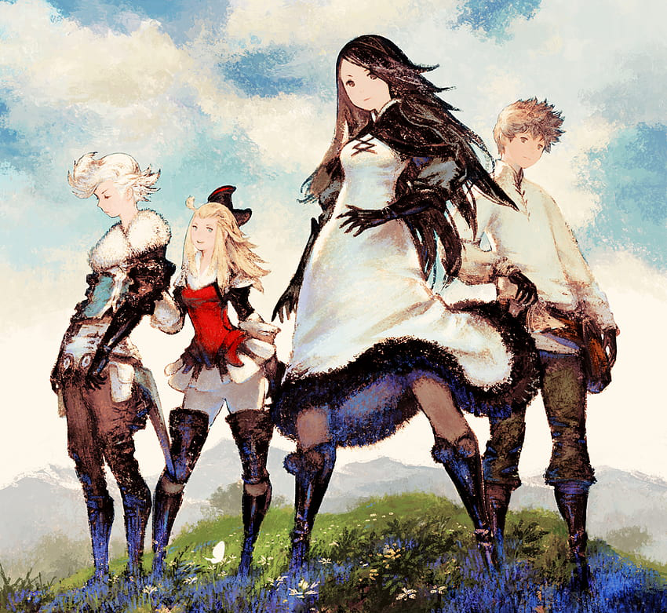
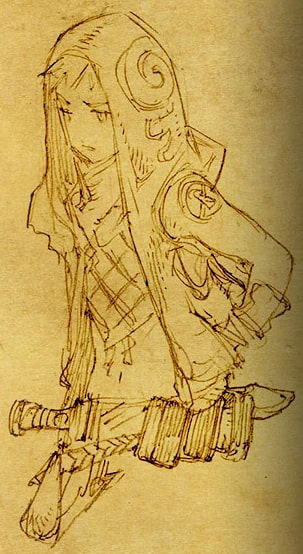

Bravely Default Web Shrine!!!
This is my favorite game / game series ever. Sorry if I lose the hash tag subscribers (not actually sorry). Click on any of the game covers to open up my brain.
Bravely Default: Flying Fairy
 Bravely Default, known in Japan as Bravely Default: Flying Fairy, is a role-playing video game developed by Silicon Studio for the Nintendo 3DS handheld console. Bravely Default was originally released in 2012 and later rereleased as an expanded edition in 2013 subtitled For the Sequel in Japan. For the Sequel was later released in Europe, Australia, and North America in 2014 simply titled as Bravely Default. This expanded edition used the subtitle Where The Fairy Flies in territories outside of Japan. Square Enix published the game in Japan, while Nintendo handled publishing duties overseas. The gameplay uses a turn-based battle system and job system, in addition to incorporating options to combine job abilities and adjust battle speed and random encounter rates.
Bravely Default is set in the world of Luxendarc, which is kept in balance by four elemental crystals protected by the Crystal Orthodoxy, a religious group with influence across the world. The story follows the adventures of four protagonists: Agnès Oblige, vestal of the Wind Crystal, who was forced out of her duties after the crystals were consumed by darkness; Tiz Arrior, the sole survivor from a destroyed village caused by the crystals' blight; Ringabel, an amnesiac philanderer trying to uncover a mysterious journal in his possession; and Edea Lee, a defector of a large army bent on capturing Agnès. Together, the party aims to reclaim the four crystals from the darkness and confront a greater evil along the way. (source: Wikipedia)
Introduction
Bravely Default: Flying Fairy is also my favorite game of all time! There isn't a single thing about the game that I don't think is perfect. I first played the game when the expanded version released in the west in 2014. I was a freshman in high school at the time and had nothing better to do but play silly 3DS games. I was drawn to the game by its pleasantly vibrant art style, and the music, gameplay and story kept me hooked. I have played through the entire story twice, and am working on my third playthrough. Bravely Default has been my favorite game since I played it, and it still is to this day!!!
Dev Team
Bravely Default was produced by Tomoya Asano (and Team Asano); the team also produced two other titles in the series, as well as Octopath Traveler, Triangle Strategy and Live A Live. I've also played Octopath Traveler and enjoyed it, and I have tried Triangle Strategy (though I'm not big on the strategy RPG genre). Bravely Default's lead artist was Akihiko Yoshida, whose work has also been seen in other Square Enix works. I really like the texture quality of his work, and admire how he brings out the character in Bravely's designs. Revo is the composer of the game; though he didn't compose for Bravely Second: End Layer, he returned to the team to compose the soundtrack for Bravely Default II. The soundtrack for Bravely Default: Flying Fairy is ethereal and raises the game's quality in comparison to other titles on the same console. Revo is also the lead of Japanese symphonic rock group Sound Horizon.
Favorite Characters
Every Bravely character is endearing to me - I could go on and on about any of the protagonists or antagonists/asterisk holders. My favorite protagonist is Edea Lee, and my favorite asterisk holder is The Jackal.
 Edea Lee is a tomboy with a temper. Driven by heroism and morality, Edea wants to do what she believes is just and right. This presents itself as the statement/question she repeats throughout the game - to be "black or white." Her father, Braev Lee, is the Duchy of Eternia, leader of the Eternian forces. Trained under a powerful swordsmaster, Edea was raised to respect and honor both her allies and her enemies. Quickly rising in power, Edea took on a mission to capture the Wind Vestal in Caldisla to win her father's pride and respect.
Edea Lee is a tomboy with a temper. Driven by heroism and morality, Edea wants to do what she believes is just and right. This presents itself as the statement/question she repeats throughout the game - to be "black or white." Her father, Braev Lee, is the Duchy of Eternia, leader of the Eternian forces. Trained under a powerful swordsmaster, Edea was raised to respect and honor both her allies and her enemies. Quickly rising in power, Edea took on a mission to capture the Wind Vestal in Caldisla to win her father's pride and respect.
After watching her commanding officer, Ominas Crowe, set Caldislan homes ablaze on his search for the Wind Vestal, Edea has an alarming change of heart. She takes a leap of faith and defects from the Eternian Sky Knights, believing that anyone who would harm innocent lives could not possibly be of good morals ("white"). Though her resolve is strengthened as she witnesses more and more Eternian Knights commit needlessly cruel acts in pursuit of their goals, Edea's later adversaries prove that perhaps morality is a bit more "gray" than she thought...

The Jackal is the holder of the Thief asterisk and the leader of a band of countless cold-hearted thieves. He and his bandits were hired by Khamer & Profiteur Merchantry to attack any Ancheim citizens that try to approach the nearby oasis. The Jackal is an extremely irritable and violent boy due to a harsh upbringing - he strongly believes that there are only two types of people in the world: those who take and those who lose. Though he guards an oasis, he often reports his throat feeling painful or sore from thirst. This parched feeling a chronic and traumagenic symptom stemming from being abandoned as a child and suffering from dehydration as he wandered the desert. The Jackal is easily manipulated, and will swing wherever he feels benefits him the best.
After the events of Bravely Default: Flying Fairy, The Jackal is moved by Edea's statements about doing the right thing and has reformed him and his group. Now, instead of cold-hearted bandit work, his band serves as vigilante for the desert, helping those who are vulnerable. He also goes out of his way to raise orphans with "good" thieving morals - telling them to ONLY steal from rich people, and never from old or weak people.
Music
I am so very in love with the original soundtrack for this game. Revo did a fantastic job capturing the magical world of Luxendarc through music. The depth of each track is ahead of its time, and I strongly believe the OST rivals that of modern AAA titles!
Revo's ability to enhance pre-established worldbuilding and character lore through careful instrumentation is one of my favorite aspects of the Bravely soundtrack. For example, in the town theme for Ancheim ("Land of Sand and a Large Clock"), a percussive ticking sound can be heard in the background. This hard pulsing rhythm manages to complement the syncopated melodies remniscent of typical RPG desert towns, but adds a new layer - IT'S A CLOCK!!! Wow. A lesser known detail is that the song/rhythm is 120bpm, which means every two clock ticking noises equals one second. Just like an actual clock!!!
The Bravely Default soundtrack feels grand and majestic. The world it shapes alongside the art and design is welcoming and full of life.
My favorite song in the Bravely Default soundtrack is pretty hard to pick. If I had to do a top five (no order), here's what I would go with:
- Toward that Prayer
- Four Legends
- Beneath the Hollow Moon
- The Day the Wind Blew
- Ballad Moving Toward Hope
Art Direction
The in-game art for Bravely Default is charming and aged fantastically on the 3DS. I think part of what makes the Bravely Default in-game art so charming IS the pixel compression (+ artifacting) native to the 3DS. It gives the low-poly character models and hand-painted backgrounds a fuzzier look, ultimately resulting in a cohesive style.
(more to come on this ... i still have a lot more to talk about)